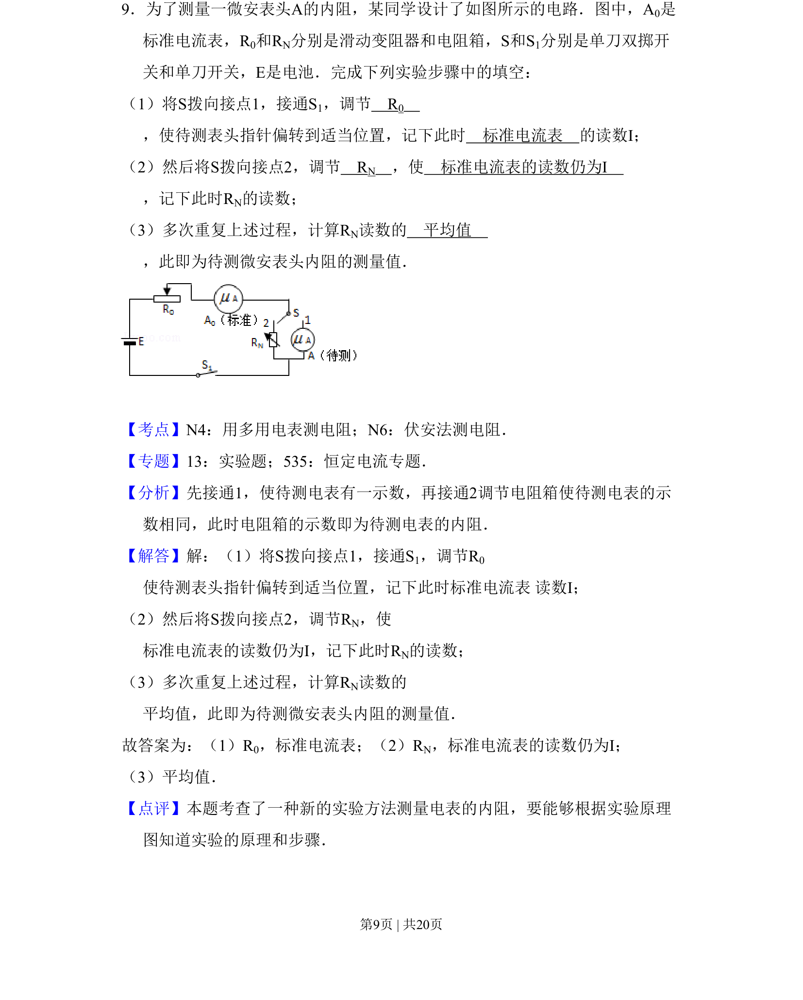
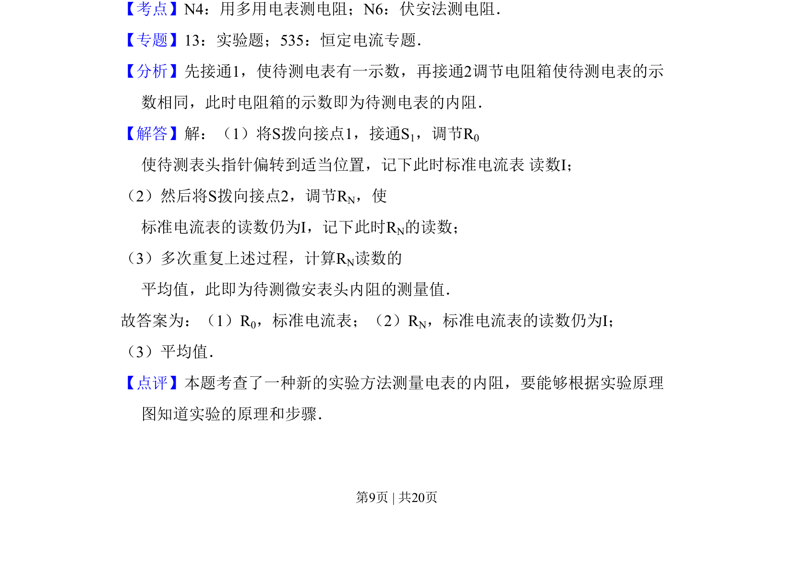

2011-新课标-09
考点：等效替代法 电阻测量 电表读数
题面

摘要
利用等效替代法测量微安表内阻的实验步骤和原理
关联考点
答案与解析


📄 原 PDF 第 9 页：
素材/真题/吉林/2008-2024·（吉林）物理高考真题/2011年高考物理试卷（新课标）（解析卷）.pdf
题干文本
9．为了测量一微安表头A的内阻，某同学设计了如图所示的电路．图中，A0是 标准电流表，R0和RN分别是滑动变阻器和电阻箱，S和S1分别是单刀双掷开 关和单刀开关，E是电池．完成下列实验步骤中的填空： （1）将S拨向接点1，接通S1，调节 R0 ，使待测表头指针偏转到适当位置，记下此时 标准电流表 的读数I； （2）然后将S拨向接点2，调节 RN ，使 标准电流表的读数仍为I ，记下此时RN的读数； （3）多次重复上述过程，计算RN读数的 平均值 ，此即为待测微安表头内阻的测量值．
解析文本
【考点】N4：用多用电表测电阻；N6：伏安法测电阻．菁优网版权所有 【专题】13：实验题；535：恒定电流专题． 【分析】先接通1，使待测电表有一示数，再接通2调节电阻箱使待测电表的示 数相同，此时电阻箱的示数即为待测电表的内阻． 【解答】解：（1）将S拨向接点1，接通S1，调节R0 使待测表头指针偏转到适当位置，记下此时标准电流表 读数I； （2）然后将S拨向接点2，调节RN，使 标准电流表的读数仍为I，记下此时RN的读数； （3）多次重复上述过程，计算RN读数的 平均值，此即为待测微安表头内阻的测量值． 故答案为：（1）R0，标准电流表；（2）RN，标准电流表的读数仍为I； （3）平均值． 【点评】本题考查了一种新的实验方法测量电表的内阻，要能够根据实验原理 图知道实验的原理和步骤．